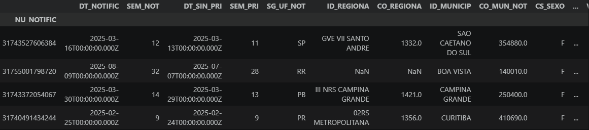
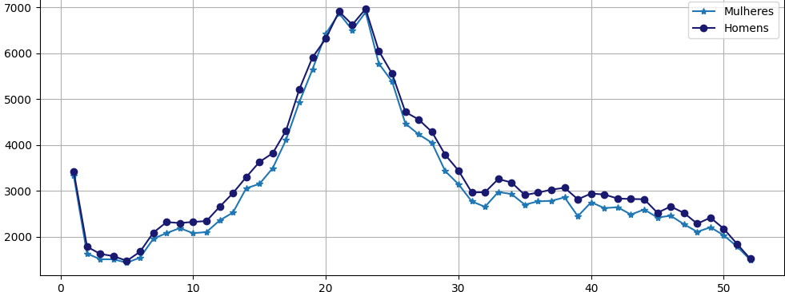

Projeto desenvolvido em Python utilizando Jupyter Notebook com foco em limpeza, transformação e construção de visualizações analíticas acerca dos registros da Síndrome Respiratória Aguda Grave (SRAG) no Brasil no ano de 2025. O objetivo do projeto é explorar os dados através de técnicas de tratamento e análise exploratória, permitindo geração de insights e construção de gráficos interativos.
Notebook dedicado ao processo de preparação dos dados, incluindo tratamento de valores ausentes, padronização das informações, transformação de colunas e organização do dataset para análise posterior.

Processo de limpeza e transformação dos dados utilizando bibliotecas Python voltadas à análise e preparação do dataset.
Ver no GitHubNotebook voltado à exploração visual dos dados através de gráficos estatísticos, indicadores analíticos e construção de visualizações para interpretação dos resultados.

Desenvolvimento de gráficos analíticos e exploração visual dos dados para identificação de padrões e tendências.
Ver no GitHub